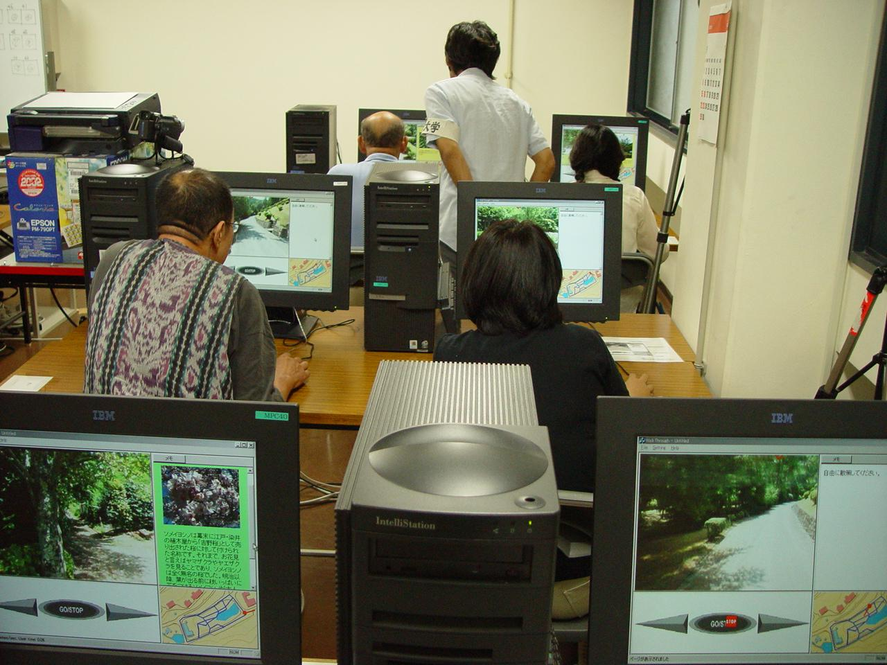

This experiment investigated the cooperative effect of both experiential learning in a real field and learning in a virtual space based on Digital City. For this, we developed a computer-assisted system for environmental learning by refering to [[ INSUFFICIENT INFORMATION typical experiential leaning and environmental education]]. In order to support environmental learning in a real field, we developed a new system that uses PDAs and GPS to provide the distribution of leaning contents, and the interchange of observation records tageed with positional information. In addition, virtual spaces for every season, created by our omnidirectional camera, were also prepared for media based learning.
1. Field experiments
The system consists of several client computers (PDAs) running PocketPC 2002 and one server computer (PC) running Windows 2000 Professional. The PDAs are connected to the server through a wireless LAN (IEEE 802.11b). The client system consists of a PDA (CASIO CASSIOPEIA E-2000), GPS receiver and antenna (Trimble Pathfinder Pocket), wireless LAN card (MELCO WLI-CF-S11G) and a waist bag. The GPS antenna is put in the pocket on top of [ ??the cap]], and the user can continuously determine her position while walking in the field. The coordinates and nature information for each information point are stored in the PDA beforehand. When a user arrives at an information point, the corresponding nature information appears on the PDA. The server is situated in the office, and its administrator monitors the usersÅf positions and current status of the nature information displayed. Such information is sent to the server computer regularly. In addition, the server administrator can send arbitrary messages to any user in the field. The field experiments were conducted at the Kamigamo Experimental Station, Kyoto University on July 20 and 21, 2002. (Fig.1) There were 13 information points and 9 quiz-type and 4 sketch-type educational materials were displayed. Sixty people, all recruited from the public, participated in the field experiments. We conducted the field experiments three times a day, that is, six times in total. Ten subjects participated in each field experiment, with representation from all age and gender categories. Before starting the field experiments, we asked the participants to fill out a questionnaire. The duration of each field experiment was 40 minutes. After experiencing the field education program, the participants were asked to answer a post-questionnaire.
The post-questionnaire responses showed that the developed system was highly evaluated in terms of educational efficacy and enjoyment. They also revealed the need for technical improvements. For example, the drawing function, which involves the use of a stylus pen, was not highly evaluated because entered lines could not be partially erased as with an eraser and representation was not sufficiently accurate. In addition, positions where information on nature appeared were sometimes inaccurate due to positional errors caused by using the autonomous GPS. Some participants answered that walking with the developed system was also troublesome due to its shape and size. Actually, they did not feel comfortable with the cables connecting the GPS to the PDA and GPS to its antenna. Although there were some problems with the system, we believe that the field education program was successful because 95.0% of the participants answered that they would join a similar program again.
2. Indoor experiments
We developed a walkthrough system for education in a virtual forest and evaluated its educational efficacy as well as usability through indoor experiments. The virtual forest was constructed with omnidirectional images taken in a forest using a digital camera with an omnidirectional vision sensor. The indoor experiments were conducted in a classroom of the Graduate School of Informatics, Kyoto University on September 14 and 15, 2002. (Fig.2) In these experiments, we used 10 client computers and 1 server computer, which were installed in one classroom. In the virtual forest, there were 14 information points where 10 quiz-type and 4 sketch-type educational materials were displayed. Sixty people, all recruited from the public, participated in the experiments. We conducted the experiments three times a day, that is, six times in total over the two-day period. Ten subjects participated in each experiment, with representation from all age and gender categories. Before starting the experiments, we asked the participants to fill out a questionnaire. The duration of each experiment was 45 minutes. After the experiment, the participants were asked to answer a post-questionnaire. The results of the post-questionnaire showed that the developed system was highly evaluated by the participants in terms of educational efficacy and enjoyment. A comparison of the results of the questionnaires showed that it had educational value. However, some technical problems in the developed system were revealed. For example, 45.0% of the participants answered that the walkthrough in the virtual forest did not proceed with sufficient smoothness, with unexpected slowdowns and stops. In addition, image quality was not high enough to identify small objects in the virtual forest. Regardless of these problems, we believe that the computer-based forest education was successful because 88.3% of the participants answered that they would like to join a similar program again and 90.0% answered that they would like to visit the real forest that the virtual forest imitated.

Fig.1. Photo of the field experiment Fig.2. Photo of the indoor experiment
Publications:
Masaya Okada, Tetsuhiko Yoshimura, Hiroyuki Tarumi, Kazuyuki Moriya, and Tetsuro Sakai: "DigitalEE: A Support System for Collaborative Environmental Education Using Distributed Virtual Space" (Written in Japanese), The Transactions of the Institute of Electronics, Information and Communication Engineers, Vol. J84-D-I, No. 6, pp. 936-946, 2001.
Masaya Okada, Hiroyuki Tarumi, Tetsuhiko Yoshimura and Kazuyuki Moriya. Collaborative Environmental Education Using Distributed Virtual Environment Accessible from Real and Virtual Worlds. Applied Computing Review. Vol. 9, No.1, pp.15-21, 2001.
Masaya Okada, Akimichi Yamada, Mizuki Yoshida, Hiroyuki Tarumi, Takanobu Kayugawa, and Kazuyuki Moriya: "Collaborative Environmental Learning with the DigitalEE II System Augmenting Real and Virtual Experiences" (Written in Japanese), ISPJ Journal, Vol. 45, No. 1, pp. 229-243, 2004.
Mitsutoshi Abe, Naoto Hasegawa, Keisuke Koba, Kazuyuki Moriya, and Tetsuro Sakai: "Development and Evaluation of Information Providing System Using PDA and GPS for Nature Observation" (Written in Japanese), Japan Journal of Educational Technology, Vol. 28, No. 1, pp.39-47, 2004.
Mitsutoshi Abe, Tetsuhiko Yoshimura, Naoki Yasukawa, Keisuke Koba, Kazuyuki Moriya, Tetsuro Sakai. Development and evaluation of support system for forest education. Journal of Forest Research, Vol.9, 2004.
Contact:
Tetsuro Sakai (Kyoto University)
sakai at i.kyoto-u.ac.jp